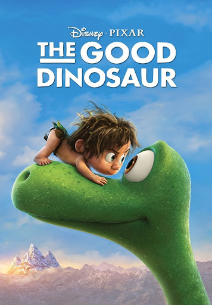

The Good Dinosaur
A rainstorm separates Arlo, a young Apatosaurus, from his family. While travelling through a harsh landscape, he befriends Spot, a feral child, who helps him reunite with his family.
Pics of The Good Dinosaur
Home Media
Home media Walt Disney Studios Home Entertainment released The Good Dinosaur on Blu-ray, DVD, Blu-ray 3D and digital download on February 23, 2016.[46] Blu-ray bonus features include Sanjay's Super Team, audio commentary, behind-the-scenes featurettes, deleted scenes, and the "Hide and Seek" short promotional clip.[47] In 2019, The Good Dinosaur was released on 4K Ultra HD Blu-ray.[48][49] In its first week, The Good Dinosaur sold 686,656 DVDs and 726,042 Blu-rays as the most sold film on both formats in the United States.[50] That same week, The Good Dinosaur topped the Nielsen VideoScan First Alert chart, which tracks overall disc sales, as well as the dedicated Blu-ray sales chart.[51] Overall, The Good Dinosaur sold 1.8 million DVDs and 1.3 million Blu-rays, adding them up to get a total of 3.1 million copies, and made $64.2 million through home media releases.[50] It was the eighth best-selling film of 2016.[52]